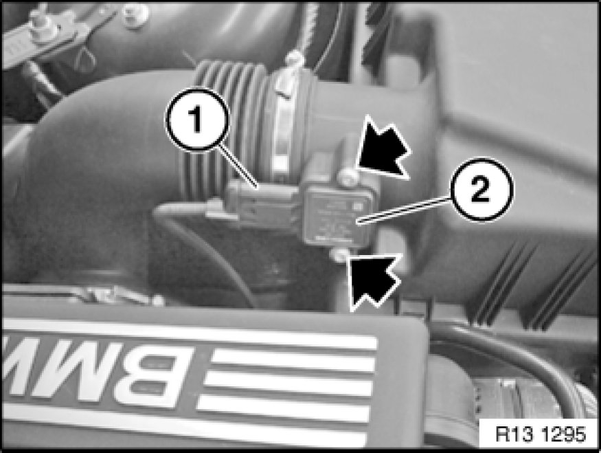

Removing And Installing/Replacing Air-Mass Flow Sensor (N52)
13 62 560 - Removing and installing/replacing air-mass flow sensor (N52)

Necessary preliminary tasks:
- Switch off ignition
- Read out fault memory of DME control unit.

Unlock plug (1) and remove.
Release screws.
Pull air-mass flow sensor (2) out of upper section of intake filter housing.
Installation:
Check sealing ring for damage.
Replace if necessary.

Note:
Check stored fault messages.
Now clear the fault memory.